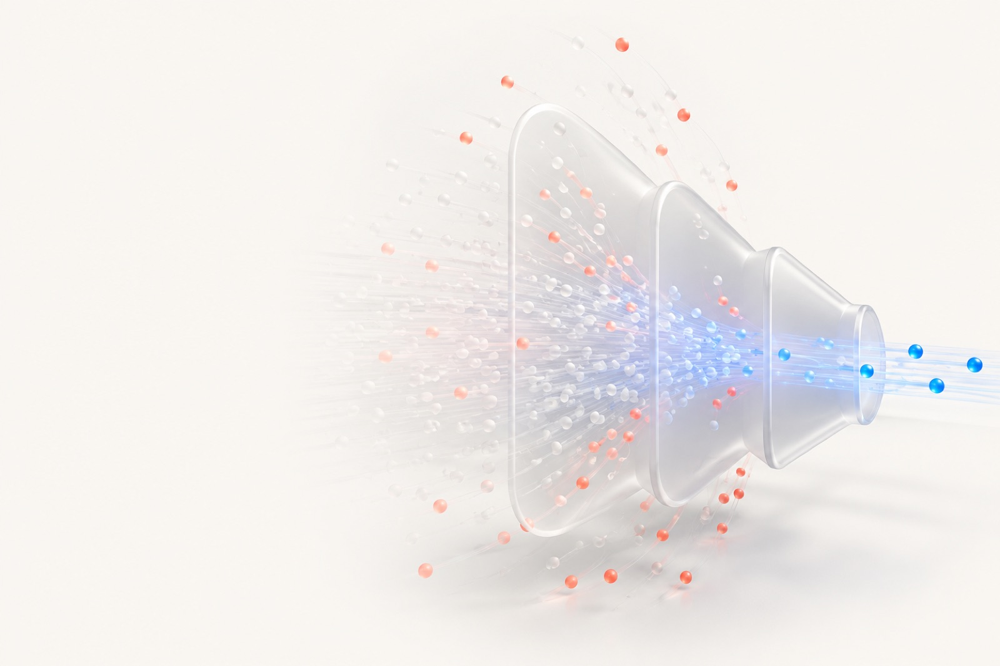
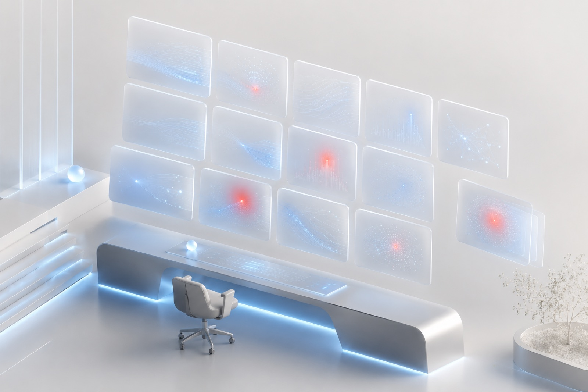

Session trace
The exact path a persona took — and the pixel where it gave up.
behavioral simulation
Simulation Labs runs a swarm of computer-use agents through any flow that matters — a new onboarding, a live checkout, an upgrade — and shows the exact pixel where each one gives up. We simulate what users do, not what they say.
Built at the H Company Computer Use Hackathon

live simulation
An ICP model attempts your existing high-intent flow and abandons at the exact friction point — no survey, just behavior.
In the product, each answer is spoken back in the user's cloned voice.
illustrative run — not a benchmark
three steps
Give us a URL and a goal — sign up, check out, cancel — in one line.
A swarm of computer-use agents attempts the task the way real users would.
See the exact pixel where each persona quit, and why, with receipts.

what you get
Every run becomes hard evidence — and rolls up into a dashboard that tracks the flow release over release. numbers illustrative
The exact path a persona took — and the pixel where it gave up.
Who made it, and how far each one got.
Where users die on your actual page.
“I couldn’t find where to pay.”
Each persona explains why it gave up, out loud.
Completion by ICP model — which behaviors fail, and where.
Completion rate release over release — a regression, then the fix that moved it back.
who it's for
cro / growth
Tune the flows that already carry intent — checkout, signup, subscription upgrade. Run before/after tests on every redesign and watch completion move in the dashboard over time.
product launch
Check a new onboarding flow, dashboard, or feature before launch. There's no user data yet, so a simulation is often your only pre-launch signal — and the moment you most want reassurance.
qa / engineering
natural expansionPlug into CI/CD and run the personas against every build before it ships — a pre-deploy check, not a manual pass. The build fails when users would.
powered by
Real tools doing real work — here's exactly what each one does.
The core computer-use engine (holo3-1-35b-a3b). Every persona sees a screenshot and returns a real click.
Cloned per-persona voices for the spoken exit interviews.
Optional narration polish for exit interviews.1
A network-layer policy that keeps runs read-only — live form POSTs are blocked before they leave the machine.2
1 Claude is optional and narration-only. Without it, a grounded template is used — it is never central to the result.
2 On a laptop the same browse-only YAML policy is enforced in-process at the browser network layer; the full GPU sandbox is out of scope for the demo.
MIT licensed · frozen-contract architecture · 68 tests passing · built at the H Company Computer Use Hackathon
design partners
We're taking on a small group of design partners. Bring one flow you care about — we'll run the swarm and hand you the failure report, direct.